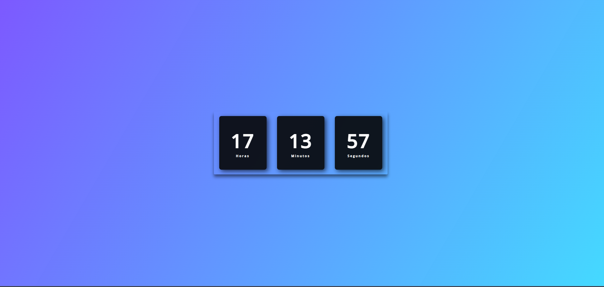

One Piece

O intuito desse projeto é simular o menu de seleçao de personagens de um jogo de luta, o tema escolhido foi o animê One Piece.
- Tecnologias Usadas
Relogio Digital
Esse é um projeto é um relogio digital, simples porém bonito e preciso.
- Tecnologias Usadas